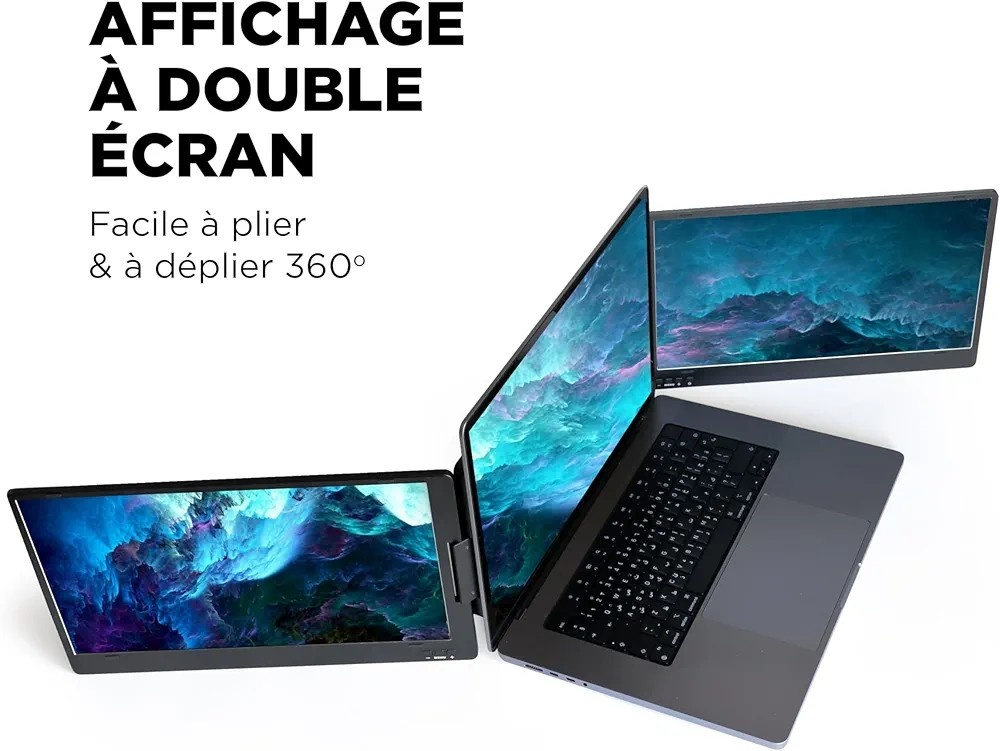
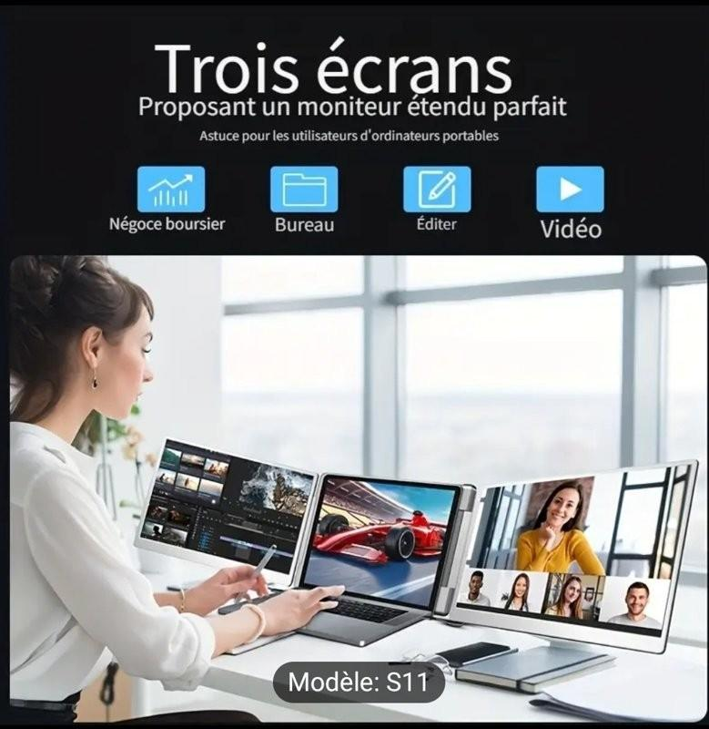
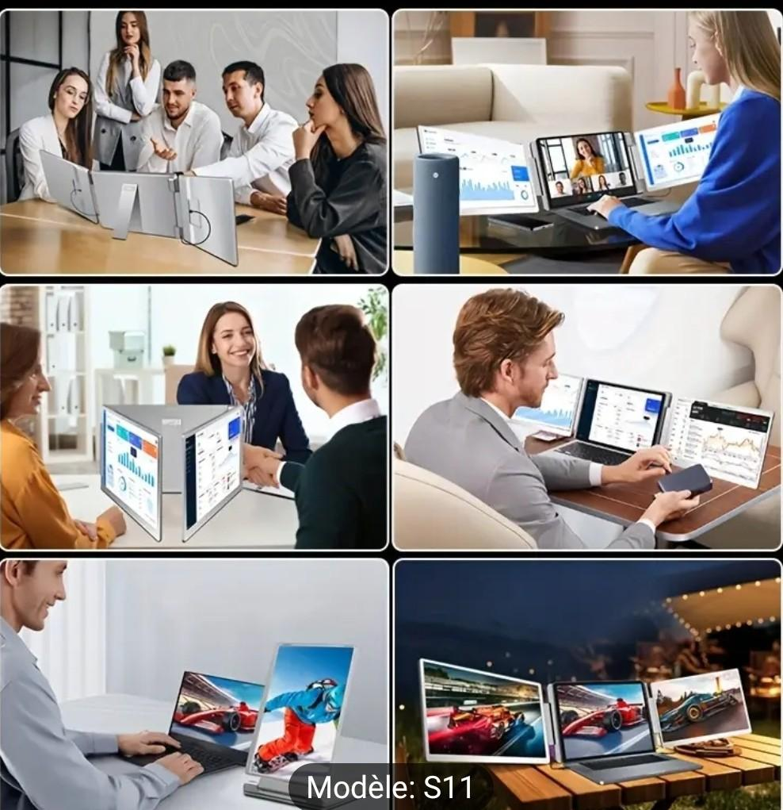
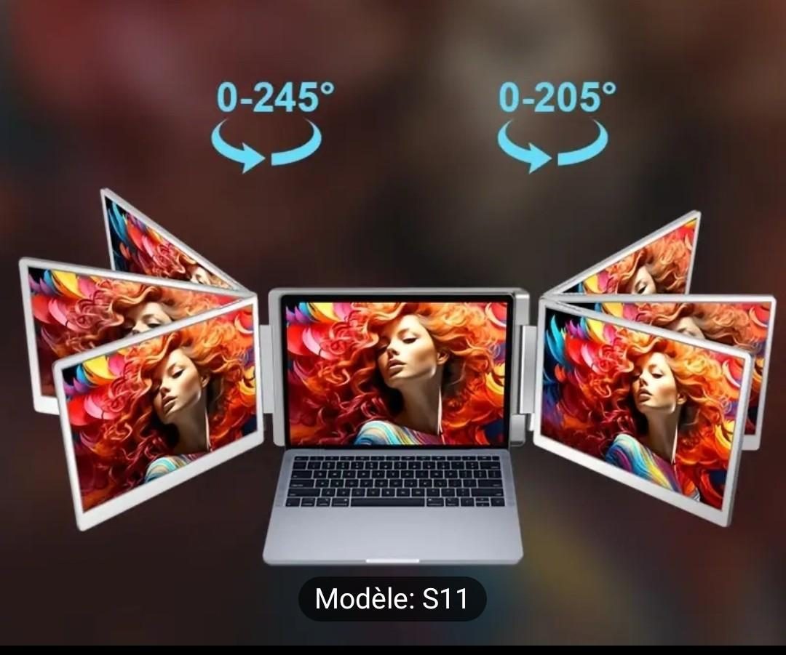

Boostez votre productivité avec Nexotek
Le double écran 2K nouvelle génération
Le double écran 2K nouvelle génération
Découvrez notre double écran portable 2K, pensé pour les professionnels nomades et les créateurs exigeants. Pliable à 360°, il s’adapte à tous vos besoins en un instant.
Grâce à ses trois écrans ultra-légers et extensibles, gagnez jusqu'à 50% de temps dans votre flux de travail : montage vidéo, bourse, codage ou télétravail, tout devient plus fluide.
Léger, compact et robuste, le modèle S11 s’emporte partout avec vous, que vous soyez en réunion, dans le train ou au coworking. La connectique universelle vous permet une compatibilité maximale.
La technologie Nexotek permet une consommation 5x inférieure à celle d’un écran classique. Idéal pour travailler plus longtemps sur batterie sans surchauffer.
"Produit incroyable. J’utilise trois écrans pour trader tous les jours et je ne peux plus m’en passer."
— Marc D., Trader indépendant"En déplacement constamment, ce triple écran a changé ma manière de bosser. Ultra pratique et léger."
— Laura B., Consultante en communication"Très bonne qualité d’affichage, et installation facile. Je recommande à tous les développeurs et créas."
— Youssef M., UX Designer